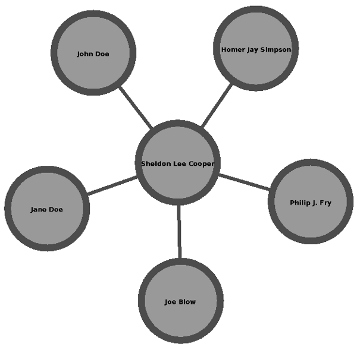
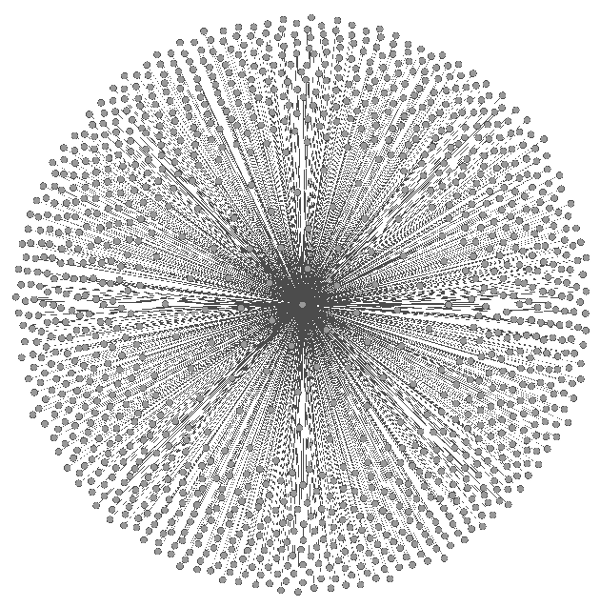

In my previous post, I explained how we can estimate the account creation date of Facebook accounts that have a 15 digit UID without having to call the Facebook API and just based on the user’s Facebook UID.
Table below shows the correlation between Facebook UID and Facebook Account Creation Date for the sample set that I analysed.
The table is represented in CSV format as follows:
In the context of preventing and fighting crime, the analysis of mobile phone traffic, among actors of a criminal network, is helpful in order to reconstruct illegal activities on the base of the relationships connecting those specific individuals. Thus, forensic analysts and investigators require new advanced tools and techniques which allow them to manage these data in a meaningful and efficient way. In this paper we present LogAnalysis, a tool we developed to provide visual data representation and filtering, statistical analysis features and the possibility of a temporal analysis of mobile phone activities. Its adoption may help in unveiling the structure of a criminal network and the roles and dynamics of communications among its components. By using LogAnalysis, forensic investigators could deeply understand hierarchies within criminal organizations, for example discovering central members that provide connections among different sub-groups, etc. Moreover, by analyzing the temporal evolution of the contacts among individuals, or by focusing on specific time windows they could acquire additional insights on the data they are analyzing. Finally, we put into evidence how the adoption of LogAnalysis may be crucial to solve real cases, providing as example a number of case studies inspired by real forensic investigations led by one of the authors.
Calling the Facebook API is a (relatively) slow operation; especially if you have to call it multiple times.
So, when possible, it is a good idea to get the information you need, without making API calls.
Here I show you how to figure out the creation date of a Facebook account without having to call the Facebook API, just based on the user’s Facebook UID.
The Bad Way To Do It
As I explained in my previous post,
it is possible to estimate the Facebook account creation date by retrieving the date of user’s oldest post.
This method has a couple of draw backs:
Draw Back #1:
You must have ‘read_stream’ permission which is an extended Facebook permission to read the user post stream.
From a user’s point of view, this sounds scarier than the other basic permissions you probably ask for.
Draw Back #2: As an extended permission it triggers a second permission screen that dramatically increases the UX friction for the users.
(You want low friction UX.)
Draw Back #3: The overhead of walking the entire post stream to determine age is very costly for the simple piece of information we synthesize.
(You have to call the Facebook API over and over and over and over … again, since the post stream is paginated.
I.e., this is at best an O(n) operation, where “n” relates to the user’s activity on Facebook.)
My Search For A Better Way
To overcome these issues I tried an to find an alternative, asynchronous approach.
I was wondering if it is possible to estimate a Facebook account creation date by looking at Facebook User ID.
I couldn’t find any official documentation on how Facebook generates a new Facebook user ID and how they are accomplishing that in a scalable fashion.
One answer I could find was from Jack Lindamood, Software Engineer at Facebook 2008-2012 which I found here:
‘Lots’ of MySQL DBs.
Each with their own unique number.
Also, each has an autoincrement table.
Then it’s just some math on the autoincrement value + unique_number * some_cap_per_db (it’s a bit more complicated due to special cases, but that’s pretty much how it works).
Another explanation was from Justin Mitchell, former engineering manager.
He explains here the history of Facebook user ID numbering system:
Facebook’s user ID schema reflects the history of the site as it transitioned from a single-server single-school operation to 400 million users.
User ID assignment has gone through several phases, notably:
Harvard only.
Facebook (or thefacebook.com, as it was called back then) was opened up to Harvard running off a single box that had mysql and apache.
IDs were auto-incremented, starting at 4 (hi Zuck).
Other schools.
Other schools were initially completely separate sites, operating on their own boxes.
IDs were still auto-increment per SQL box, but each server/school had a different prefix.
For instance, all Columbia IDs are between 100000-199999 and all Stanford IDs are between 200000-299999.
You can determine what school any early Facebook user attended based on his or her user ID.
High schools.
Someone must have figured out that this ID system didn’t scale very well, so Facebook changed its DB layout when high schools were introduced.
While all the college users maintained their current DB, high school users were randomly assigned to one of many many high school DBs.
These users IDs hash to the correct database, rather than simply being floor(ID / 100000).
Open registration.
Facebook maintained a similar layout once open reg was launched, except the new databases weren’t signified as “high school.”
64 bit.
Given Facebook’s growth rate, it was estimated that the entire world would be on the site by 2011, overflowing 32-bit space.
While we considered limiting the site to the first 4-billion people to register and lobbying governments to reduce the world’s population, the growth team pushed pretty hard to just increase the ID space to 64-bit.
Using Facecbook UIDs For Predictions
So it seems that new Facebook IDs are 64 bits and contain 15 digits.
There is a post dating from October 2007 that mentions that Facebook had plans to do this long time ago but according to this post from May, 2009, Facebook was going to release 64 bit user IDs back to 2009.
I studied the correlation between Facebook User ID and Account Creation Date for a tiny sample set of 77 Facebook accounts.
41 accounts of this sample set had a user ID containing 15 digits and for the rest the user ID has less than 15 digits.
Figures below illustrate this correlation seperately for 64 bit UIDS (figure 1) and old style UIDs (figure 2).
Figure 1.Figure 2.
The graph in figure 1 is for the new(er) Facebook UIDs.
The graph in figure 2 is for the old style Facebook IDs.
You can see that the correlation between Facebook UID and its creation date is a lot better for the new(er) Facebook UIDs than the old ones.
Or in other words, as we observe, there is an interesting correlation between Facebook User ID and Account Creation Date for 64 bit user IDs (see figure 1).
Also in this sample set, old UIDs are more than 800 days old (see figure 2).
The overlap between two graphs might be a period that Facebook was moving from old UIDs to 64 bit ones.
Therefore as an alternative approach to estimate the Facebook account creation date, we may leverage the monotonically increasing property of 64 bit Facebook user IDs and create a table of bounds that would give us at least a quarterly estimate on the creation date for the account - an appropriate level of granularity for this purpose.
Taking this approach will reduce the number of permissions your application need and dramatically decrease the amount of processing time and remove a variable around the elapsed time to deliver a response.
Update (March 14, 2013):
See here to download the data set.
Tag clouds provide an aggregate of tag-usage statistics. They are typically sent as in-line HTML to browsers. However, display mechanisms suited for ordinary text are not ideal for tags, because font sizes may vary widely on a line. As well, the typical layout does not account for relationships that may be known between tags. This paper presents models and algorithms to improve the display of tag clouds that consist of in-line HTML, as well as algorithms that use nested tables to achieve a more general 2-dimensional layout in which tag relationships are considered. The first algorithms leverage prior work in typesetting and rectangle packing, whereas the second group of algorithms leverage prior work in Electronic Design Automation. Experiments show our algorithms can be efficiently implemented and perform well.
Facebook Graph API and FQL don’t provide you with a simple way of getting the creation date of a Facebook account.
But if you have a valid Facebook Access Token with ‘read_stream’ permission, it is possible to estimate the Facebook account creation date by finding the creation date of the oldest user post.
According to the Facebook documentation,
each query of the stream table is limited to the previous 30 days or 50 posts, whichever is greater, however you can use time-specific fields such as created_time along with FQL operators (such as < or >) to retrieve a much greater range of posts.
Also you must have ‘read_stream’ permission:
Querying without the ‘read_stream’ permission will return only the public view of the data (i.e. data that can be see when the user is logged out).
Here is some code to do that:
/**
* Estimating the Facebook account age by finding the creation date of the oldest post.
* A valid Facebook Access Token with read_stream permission is required.
*
* @author Massoud Seifi, Ph.D. @ MetaDataScience.com
*/
class AccountAge
{
public $baseUrl;
function __construct()
{
$this->baseUrl = 'https://graph.facebook.com/';
}
/**
* Run a Facebook FQL query
* @param string $fql Facebook query
* @param string $access_token Facebook Access Token
* @return array Return Facebook query result
*/
public function doFQLRequest($fql, $access_token)
{
$url = $this->baseUrl . 'fql?q=' . urlencode($fql)
. '&access_token=' . $access_token;
$ch = curl_init($url);
curl_setopt($ch, CURLOPT_TIMEOUT, 60);
curl_setopt($ch, CURLOPT_RETURNTRANSFER, 1);
curl_setopt($ch, CURLOPT_SSL_VERIFYPEER, 0);
$decodedResult = json_decode(curl_exec($ch), true);
curl_close($ch);
$result = array();
if(isset($decodedResult['data']))
$result = $decodedResult['data'];
else
throw new Exception("Facebook FQL Error. Please check if the access token is valid.\n");
return $result;
}
/**
* Estimate the account age by finding the creation date of the oldest post
* @param string $access_token Facebook Access Token
* @return integer Return the Facebook account age in seconds
*/
public function getAccountAge($access_token)
{
$date = new \DateTime('now');
$timestamp = $date->getTimestamp();
echo "# Finding the oldest post may take several minutes to complete.\n";
echo "# Please wait ";
while (true){ // Loop until finding the oldest post
echo ".";
$fql = "SELECT created_time FROM stream WHERE source_id = me()"
. " AND created_time < " . $timestamp
. " ORDER BY created_time ASC LIMIT 5000";
$result = $this->doFQLRequest($fql, $access_token);
if (!isset($result[0]['created_time']))
break;
$timestamp = $result[0]['created_time'];
}
echo "\n";
$age = $date->getTimestamp() - $timestamp;
return $age;
}
/**
* Display the account age in a human readable format
* @param int $age Account age in seconds
*/
public function printAccountAge($age)
{
$years = floor($age / (365*24*60*60));
$months = floor(($age - $years * 365*24*60*60) / (30*24*60*60));
$days = floor(($age - $years * 365*24*60*60 - $months * 30*24*60*60) / (24*60*60));
echo "\nAccount age: $years years, $months months, $days days\n";
}
}
$p = new AccountAge();
// You need an Access Token with a read_stream permission
$access_token = 'AAACEdEose0cBAOY7bB3A9m7s3U6hbuJvfECxuZBFRN6YjqPC2eZB5x8WrnK51Gl3WsdwYovmxdPZCKFyJKB5TuFhpxsDJpAZCe9y6eutyQZDZD';
$age = $p->getAccountAge($access_token);
$p->printAccountAge($age);
We show that easily accessible digital records of behavior, Facebook Likes, can be used to automatically and accurately predict a range of highly sensitive personal attributes including: sexual orientation, ethnicity, religious and political views, personality traits, intelligence, happiness, use of addictive substances, parental separation, age, and gender. The analysis presented is based on a dataset of over 58,000 volunteers who provided their Facebook Likes, detailed demographic profiles, and the results of several psychometric tests. The proposed model uses dimensionality reduction for preprocessing the Likes data, which are then entered into logistic/linear regression to predict individual psychodemographic profiles from Likes. The model correctly discriminates between homosexual and heterosexual men in 88% of cases, African Americans and Caucasian Americans in 95% of cases, and between Democrat and Republican in 85% of cases. For the personality trait “Openness,” prediction accuracy is close to the test–retest accuracy of a standard personality test. We give examples of associations between attributes and Likes and discuss implications for online personalization and privacy.
Facebook is a popular online social network.
It offers researchers interested in social network analysis a (potentially) large data set to work with.
But graph visualization software, such as Gephi and Guess, do not have a (built-in) way of directly accessing Facebook data.
Finding a way to export your Facebook data into a file format, such as GDF, is a necesary intermediate step, before you can see what it looks like.
Export Your Facebook Friends To GDF
A little knowledge of the Facebook Graph API makes the task of exporting your Facebook friends to a format like GDF relatively easy.
With said knowledge, the exporting process becomes a 4-step process:
#1 get a Facebook access token,
#2 call the /me API end point,
#3 call the /me/friends API end point and
#4 transform the JSON results that step #2 and step #3 gave us into GDF.
Step #1: Get a Facebook Access Token
If you are doing this for your own Facebook data (rather than random users off of the Internet) then
Step #1 can be accomplished by just going Facebook's Graph API Explorer
and then grabbing the Facebook access token from that page and using it to construct the URLs in step #2 and step #3.
Alternatively, if you are doing this for random people off of the Internet, you will likely have to learn how to create a full-fledged web-application with Facebook support.
That's out of the scope of this article.
Here I want to focus on how to export Facebook social network data into GDF, so you can view it (and manipulate it) in graph visualization software, such as
Gephi and Guess.
Step #2: Construct and Call the /me Facebook API URL
Before you get the list of friends, you need to get data on the person for whom the access token is for.
If this is your Facebook access token, then this will be your data we are getting.
We need to get this data because this person needs to be in the graph also!
After all, these are this person's Facebook friends, and each friend will have an edge (in the graph) connecting to this person!
So, once you have the Facebook access token (described in step #1) you can construct the /me Facebook API URL.
Figure 1.
An example Facebook Graph API URL, used to get a Facebook user's basic info.
(The value of the access_token will (potentially) be different for you.)
Note that your API URL will be slightly different than what appears in figure 1 because your Facebook access token will be different.
So, if your Facebook access token is "uxRAAcEose5BPWxzzRucb7A2", then your API URL will be:
Figure 2.
Another example Facebook Graph API URL, used to get a Facebook user's basic info.
(The value of the access_token will (potentially) be different for you.)
Note that the API URLs in figure 1 and figure 2 are different.
NOTE: Facebook access tokens expire, and will stop working after a while.
If this happens to you, don't worry.
Just go get another one.
When you call the /me Facebook API URL (shown in figure 1 and figure 2) you will get output that looks something like:
Figure 3.
Example JSON output from the Facebook Graph API URL, used to get a Facebook user's basic info, shown in figure 1 and figure 2.
(The data in the JSON you receive will be different, but the format will be the same, or very similar.)
Although in different contexts, different parts of the JSON output (in figure 3) will be interesting.
For our purposes, we only care about 2 things here: id and name.
(Which are "100000593854809" and "Sheldon Lee Cooper" respectively.)
Step #3: Construct and Call the /me/friends Facebook API URL
Once you have the Facebook access token (described in step #1) you can construct the /me/friends Facebook API URL.
Figure 4.
An example Facebook Graph API URL, used to get a Facebook user's list of friends.
(The value of the access_token will (potentially) be different for you.)
Note that your API URL will be slightly different than what appears in figure 4 because your Faecbook access token will be different.
So, if your Facebook access token is "uxRAAcEose5BPWxzzRucb7A2", then your API URL will be:
Figure 5.
Another example Facebook Graph API URL, used to get a Facebook user's list of friends.
(The value of the access_token will (potentially) be different for you.)
Note that the API URLs in figure 4 and figure 5 are different.
AGAIN NOTE: Facebook access tokens expire, and will stop working after a while.
If this happens to you, don't worry.
Just go get another one.
When you call the /me/friends Facebook API URL (shown in figure 4 and figure 5) you will get output that looks something like:
Figure 6.
Example JSON output from the Facebook Graph API URL, used to get a Facebook user's list of friends shown in figure 4 and figure 5.
(The data in the JSON you receive will be different, but the format will be the same.)
Note that the result from this API call is (potentially) paginated;
and you may need to make more than one API call, to get all the friends,
by calling the URL (in the JSON) at data.paging.
Step #3: Create a GDF File
So, we now have JSON output (from step #2 and step #3).
But we can't stop there because the graph visualization software will NOT understand this (JSON) data.
We have to turn this data into something graph visualization software understand.
For someone with basic programming skills, this should be a straight forward task.
Skip These Steps: A Program That Exports Your Facebook Friends To GDF
For those that don't want to program this themselves (or can't program this themselves) I have included a command line PHP program that does all this for you.
It is called "fb_socialnetwork_1.php".
You run it from the command line with a command like:
Figure 7.
An example of how the "fb_socialnetwork_1.php" PHP script is run from the command line to create a GDF file.
Running it this way will create a GDF file called "fbsn_1.gdf".
Note that this PHP script is NOT a meant to be run as (part of) a web-application;
this is a command-line PHP script, and it needs to be run as such.
NOTE that (the value for) your access token will be different.
And it will give you output like (that will be stored in the file "fbsn_1.gdf", unless you override it with the --output=... switch).
The output from this will look something like this:
nodedef> name,label
n100000593854809,"Sheldon Lee Cooper"
n8004,"Joe Blow"
n1010104,"Jane Doe"
n1110021,"Philip J. Fry"
n1111178,"John Doe"
n179983422054014,"Homer Jay Simpson"
edgedef> node1,node2,weight
n100000593854809,n8004
n100000593854809,n1010104
n100000593854809,n1110021
n100000593854809,n1111178
n100000593854809,n179983422054014
Figure 8.
The (hypothetical) GDF file created from the JSON results in figure 3 and figure 6.
Note that the only edges in this graph are edges connecting
"Sheldon Lee Cooper" (n100000593854809) to everyone else.
(download)
You can download fb_socialnetwork_1.php here.
(This download is a GZip file, so you will need to gunzip it first, to extract the "fb_socialnetwork_1.php" file.)
What It Looks Like
Let's see what the GDF file in figure 8 looks like:

Figure 9.
Screenshot of the GDF file shown in figure 8 loaded into Gephi.
This is actually a very UNINTERESTING graph!
We gain no insight from viewing the data in this way.
To make this more interesting, not only do we need the list of friends (as we have already gotten) but we also need our friends' friends.
We need to see how our friends are connected to each other.
We need to see if there are communities (in the graph theory sense of the word) amoung our friends.
But that is for the part 2 article; this is the part 1 article.
Before we can run, we need to walk; and this article shows you the basics.
To show you a real version of this graph, here is the graph of my personal Facebook social network:

Figure 10.
Screenshot of the GDF file of my Facebook social network exported using "fb_socialnetwork_1.php" and loaded into Gephi.
The node right at the center represents me.
(Obviously there are a lot of friends in my Facebook social network export.
But this is still a very uninteresting graph; even if there are more nodes.)
To Be Continued
Part 2 adds to what we covered here, but also exports a person's Friends of Friends to the GDF file, so that we can look at a more interesting graph.
Sometimes the data you are dealing with is a graph.
Before you even start considering how you will view your graph data
(such as by using Gephi or Guess, etc)
you need to (serialize and) store you graph into some kind of file format.
If we were dealing with tabular data (instead of graph data) we would probably use a CSV file, if we wanted to keep things simple.
But is there anything like a CSV file format for graphs?
The answer is yes!
The answer is: GDF.
CSV Format
The CSV format is a very simple format for storing spreadsheets.
It looks like this:
"Name","DOB","Sex"
"Joe Blow","1922-11-15","male"
"Jane Doe","1980-02-14","female"
"Homer Jay Simpson","1955-05-12","male"
"Philip J. Fry","1974-08-09","male"
Figure 1.
An example CSV file.
This CSV file has 3 columns:
name,
DOB and
sex.
Also, this CSV file has 4 rows.
(download)
As you can see it is a very simple text-based format that is very easy for someone with basic programming skills to generate.
It is also very well supported, in various software.
All the major spreadsheet software supports it.
And software that exports (to a spreadsheet file or "to Excel") tend to export to CSV.
As far as tabular data is concerned, CSV is ubiquitous.
In a spreadsheet software package, that example CSV file in figure 1 might look something like this:
Figure 2.
Screenshot of the CSV shown in figure 1 loaded into
LibreOffice Calc.
GDF Format
But CSV is for tabular-type data.
Is there something as simple for graph-type data?
The answer is yes!
That is what GDF is.
The GDF format is a very simple format for storing graphs.
It looks like this:
nodedef> name
a
b
c
d
e
edgedef> node1,node2
a,b
b,c
b,d
d,e
Figure 3.
An example GDF file.
This GDF file has 5 nodes:
a,
b,
c,
d and
e.
Also, this GDF file has 4 edges.
(download)
As you can see this too is a very simple text-based format that is very easy for someone with basic programming skills to generate.
It is also very well supported, in various software.
(Both Gephi and Guess support it.)
In a graph visualization software, it might look something like this:
Figure 4.
Screenshot of the GDF file shown in figure 3 loaded into
Gephi.
Here are some (more) complex GDF files, just to give you a sense of what GDF files can look like....
nodedef> name
cherry
c
n235
"Joe Blow"
"a,b,c"
edgedef> node1,node2
cherry,c
n235,c
c,"Joe Blow"
"Jow Blow","a,b,c"
"a,b,c",c
Figure 5.
An example GDF file.
This GDF file has 5 nodes:
cherry,
c,
n235,
"Joe Blow" and
"a,b,c".
Also, this GDF file has 5 edges.
And....
nodedef> name,label
me,"Joe Blow"
friend_1,"Jane Doe"
friend_2,Homer Jay Simpson"
friend_3,"Philip J. Fry"
friend_4,"Sheldon Lee Cooper"
edgedef> node1,node2,weight
me,friend_1,1.1
me,friend_2,7.4
me,friend_3,100.0003
me,friend_4,3.14159265358979323846264338327950
friend_1,friend_2,33.3
friend_1,friend_3,0.000001
friend_2,friend_3,12.345
Figure 6.
An example GDF file.
This GDF file has 5 nodes:
me,
friend_1,
friend_2,
friend_3 and
friend_4.
Also, this GDF file has 7 edges.
This GDF file also makes use of the built-in node label and weight columns, in the node and edge sections, respectively.
Two Sections To A GDF File Format
You probably already noticed that a GDF file has 2 section:
a node-section and an edge-section.
If we consider the GDF files in figure 3, the node-section is:
nodedef> name
a
b
c
d
e
Figure 7.Part of the GDF file from figure 3.
This part of the GDF file lists the nodes in the graph.
And the edge-section is:
edgedef> node1,node2
a,b
b,c
b,d
d,e
Figure 8.Part of the GDF file from figure 3.
This part of the GDF file lists the edges in the graph.
If you take what is in figure 7 and figure 8 and combine them (to get what you have in figure 3) you have a complete GDF file.
Node Labels
Nodes can be given a label.
(Labels are human-readable text.)
You do this in the node-section with something like:
Friending recommendation has successfully contributed to the explosive growth of on-line social networks. Most friending recommendation services today aim to support passive friending, where a user passively selects friending targets from the recommended candidates. In this paper, we advocate recommendation support for active friending, where a user actively specifies a friending target. To the best of our knowledge, a recommendation designed to provide guidance for a user to systematically approach his friending target, has not been explored in existing on-line social networking services. To maximize the probability that the friending target would accept an invitation from the user, we formulate a new optimization problem, namely, Acceptance Probability Maximization (APM), and develop a polynomial time algorithm, called Selective Invitation with Tree and In-Node Aggregation (SITINA), to find the optimal solution. We implement an active friending service with SITINA in Facebook to validate our idea. Our user study and experimental results manifest that SITINA outperforms manual selection and the baseline approach in solution quality efficiently
We empirically analyze five online communities: Friendster, Livejournal, Facebook, Orkut, Myspace, to identify causes for the decline of social networks. We define social resilience as the ability of a community to withstand changes. We do not argue about the cause of such changes, but concentrate on their impact. Changes may cause users to leave, which may trigger further leaves of others who lost connection to their friends. This may lead to cascades of users leaving. A social network is said to be resilient if the size of such cascades can be limited. To quantify resilience, we use the k-core analysis, to identify subsets of the network in which all users have at least k friends. These connections generate benefits (b) for each user, which have to outweigh the costs (c) of being a member of the network. If this difference is not positive, users leave. After all cascades, the remaining network is the k-core of the original network determined by the cost-to-benefit c/b ratio. By analysing the cumulative distribution of k-cores we are able to calculate the number of users remaining in each community. This allows us to infer the impact of the c/b ratio on the resilience of these online communities. We find that the different online communities have different k-core distributions. Consequently, similar changes in the c/b ratio have a different impact on the amount of active users. As a case study, we focus on the evolution of Friendster. We identify time periods when new users entering the network observed an insufficient c/b ratio. This measure can be seen as a precursor of the later collapse of the community. Our analysis can be applied to estimate the impact of changes in the user interface, which may temporarily increase the c/b ratio, thus posing a threat for the community to shrink, or even to collapse.
For those of us in Vancouver, there is a data science talk on Wednesday March 27th.
The talk is with the Machine Learning Group and will be given by Don Turnbull (@donturn).
Data scientists are often interested in getting their hands on (suprise, suprise) data.
It is the "currency" of their vocation.
Sometimes they have to go to great lengths to gather the data set themselves.
And sometimes people will "give" it to them.
There is some interesting stuff in there.
Things such as data on crime, election results, voting zones, property taxes, rapid transit, schools, trees, homeless shelter locations, etc etc.
But that's just what caught my eye.
Can you use machine learning and statistics to predict the gender of someone on Twitter?
Male or Female?
If you have spent any kind of time online, then you have probably heard of the various (online) social networks out there.
Things such as Facebook, Orkut, VK (popular in Russia), Mixi (popular in Japan) and Twitter.
Many of these social network require you to tell them whether you are a male or female.
(To some, this information is invaluable.)
However, Twitter doesn't
Twitter
Twitter in particular, is an interesting social network.
Both from the point of view of someone using it.
And from the point of view of someone doing research.
Twitter has made it easy for people to sign up.
Some websites want to know all your (deepest darkest) details before they let you sign up.
Twitter doesn't.
All a person has to provide to Twitter to sign up is a name and e-mail address.
That's it.
Figure 1.
Twitter's signup form
(You don't have to tell Twitter where you live or your date of birth or gender, etc.)
And really, the name doesn't even have to be real.
Using a pseudonym or any other name you want to use is just fine.
If you want your name on Twitter to be "Panda Puncher", go right ahead.
(This is one of the strengths and attractions of Twitter in my opinion.)
Inferring Gender
Even though Twitter doesn't ask for your gender, doesn't mean no one cares about it.
(People involving in advertising care about it a lot. People involved with identity. People involved in fraud detection care too.)
But if someone doesn't self-assert their gender (to say they are male or female), can we infer someone's gender from their Twitter account?
I'd say the answer is "yes".
(Probably because I've already worked on commercial projects that did gender prediction with similar types of data :-) )
I think you can infer someone's gender without them telling you what it is, based on clues they leave around, with varying degrees of success.
Consider, for example, a population that is 50% male and 50% female.
If you guessed "male" every single time, then (with a random sample) your gender prediction would be accurate 50% of the time.
This is kind of like the idiom: a stopped clock is right twice a day.
Any gender prediction engine we consider "good" should do better than this.
And I can even think of different ways that may work.
Examples
For example, consider the profile of a friend of mine of Twitter, in figure 2.
Figure 2.
Twitter profile of @harpersnotes with 3 clues useful for gender predication marked in red.
(Remember, these clues are for a machine learning system to use.
Of course a human can do this categorization pretty easily, but we want to automate it.)
The first clue is the avatar image.
A photo was used.
We could use computer vision to infer the gender of that image.
The second clue is the given name ("Richard").
Many given names are highly gender skewed.
(I suspect there are probably a lot more males with the name "Richard" than there are females.
Which would probably make it a "good" gender predictor.)
The third clue probably seems less obvious, but the Twitter profile description can also give a clue to the gender.
It could be that males and females use language differently, and that the language used in the description is a gender predictor.
There is actually a fourth clue not marked in the figure 2.
The Twitter screen name ("@harpersnotes").
Like the third clue, it could be that males and females use language differently for the Twitter screen name too.
And thus the words used the Twitter screen name could be a gender predictor.
Also, if the Twitter screen name contains a person's given name (ex: @tom_hartley, @bradleyvoytek and @JonathanLWai),
then that may be able to be used as a "good" gender predictor as well.
As a possible fifth clue also not shown in figure 2, it is conceivable that the location could be a gender predictor.
Perhaps not the location in figure 2 ("Albuquerque, New Mexico, USA "),
but say if the location is somewhere where there is a strong gender skew, such as India or China, or even a remote mining town in Northern Canada where the only people living there are mining workers, and all the miners are males.
(And Twitter does offer us other clues not shown in figure 2.
Perhaps the Twitter user ID gives us a clue.
For example, if more males signed up for Twitter in the first 3 years that Twitter existed, and we know that Twitter user IDs with a range between certain numbers are from that era,
then we can predict male for all users with Twitter user IDs we think are from that era, and predict nothing outside of that.)
Now obviously, in general, some of these clues are going to be better gender predictors than others.
(Perhaps the given name is a better gender predictor than the avatar image because many people don't use photos for their avatar image.)
And for specific profiles, which is gender predictor is accurate will vary; but we expect trends.
Here's an example of another friend whose profile really gives us no clues, or barely any, as seen in figure 3:
Probably not much in the way of clues here, in figure 3.
Not unless not giving clues is gender skewed :-)
(Note that I'm not trying to list out every possible data source that may be useful for gender prediction.
I am only trying to give you a "flavor" of the strategies that could be used.
Is there a gender skew with the apps people use and which send tweets to twitter?
Is there a gender skew in the time of day people tweet, or retweet, etc?
Does a person's social network graph (in the graph theory sense of the term) give clues to their gender?
There are many possibilities one can test and build machine learning systems around.)
Accuracy
Now, this doesn't mean a single gender prediction strategy will always be 100% accurate.
(There is very likely going to be some level of error.)
But these strategies will have some level of accuracy.
And even with an error, these gender predictions may still be useful.
You could even (somehow) combine these different gender prediction strategies together, to create a single more accurate strategy for gender prediction with a lower error rate.
Analysis
Developing a gender prediction "engine" really could be done by just taking a reference data set of known male and female accounts and doing some analysis work.
(I.e., get a set of Twitter accounts that you know the gender for, and use some statistics, machine learning and educated guesses to discover differences between various things that are more common with males than female, and what things are more common with females than males. And use that to come up with a model you can use for making gender predictions.)
And then validate the resulting model against another (separate) set of Twitter accounts for which you know the gender.
(Just to verify that your model is a "good" one.)
Of course, these "engines" can have all sorts of nuances, special conditions, and may need to be updated from time to time, as past analysis work done may no longer be applicable.
Tweets
Another clue I have yet to mention (because I wanted to save it for last) are a person's tweets.
Specifically, the text found in a person's tweet.
Are there differences between the way males and females tweet?
I suspect so (at least some of the time, if not a lot of the time).
Is gender useful in predicting found?
Turns out the answer is: sometimes.
Eric Barker found an interesting quote from the book "A Billion Wicked Thoughts: What the World's Largest Experiment Reveals about Human Desire" that gives an example of when it can matter.
The most popular paysites featuring adult videos, including Brazzers, Bang Bros, and Reality Kings, typically attract an audience that is around 75 percent men.
Of course, that does mean that one out of four visitors is a woman -- a minority, though a significant minority.
But when it comes to actually paying for porn, the gender gap widens into an abyss.
According to CCBill, the billing service most commonly used by the online adult industry, only 2 percent of all subscriptions to pornography sites are made on credit cards with women's names.
In fact, CCBill even flags female names as potential fraud, since so many of these charges result in an angry wife or mother demanding a refund for the misuse of her card.
Hello world!
This is the first post on DataScholars.
This post is really just a marker, to signify the beginning of this blog.
This is a blog about
data science,
computer science,
machine learning,
artificial intelligence,
data mining,
analysis,
and
visualization.
 You must have ‘read_stream’ permission which is an extended Facebook permission to read the user post stream.
From a user’s point of view, this sounds scarier than the other basic permissions you probably ask for.
You must have ‘read_stream’ permission which is an extended Facebook permission to read the user post stream.
From a user’s point of view, this sounds scarier than the other basic permissions you probably ask for.